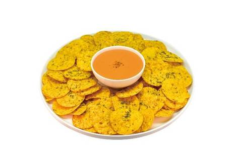
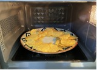
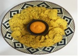

← 목록으로

메뉴명
오리지널 나초
판매가격
5,500원
원재료
나초, 치즈소스, 파슬리
사용 부자재
돈까스접시, 젓가락
메뉴특징
체다치즈의 진한 풍미와 짭짤한 치즈맛과 나초의 담백함이 조화롭게 어우러진 오리지널나초
조리방법

1
접시에 나초 100g을 가운데 소스볼 들어갈 자리를 빼고 가장자리에 둘러 담아, 700W 렌지에서 1분간 돌린다.

2
소스볼에 나초소스 40g을 담아 가운데에 올려주고, 나초와 치즈소스에 파슬리를 뿌려 완성한다.
(젓가락, 물티슈 제공)
※부서진 나초는 최대한 아래쪽에 깔아주기!!